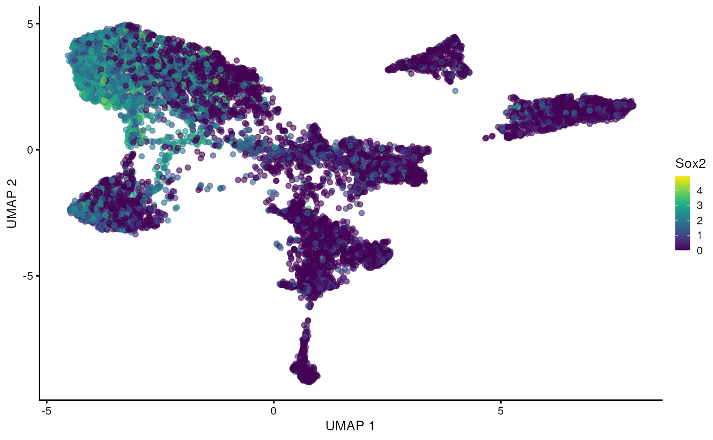
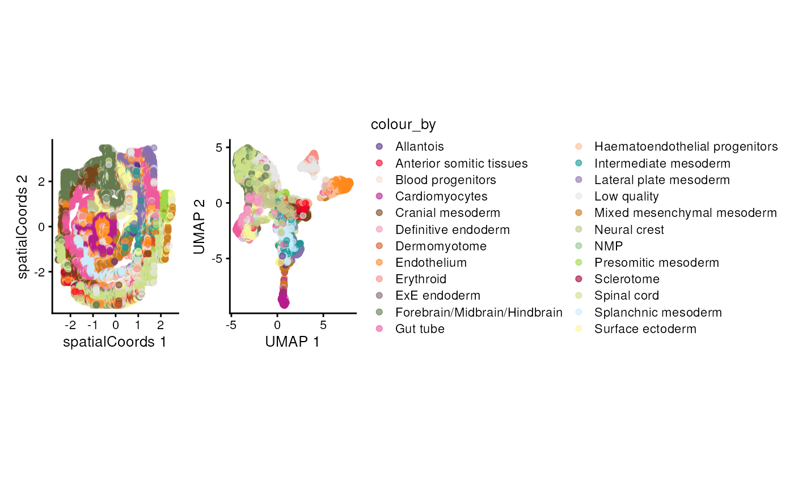

Unlocking single cell spatial omics analyses with scdney
Source:vignettes/workshop_material.Rmd
workshop_material.RmdFarhan Ameen\(^{1,2,3}\), Shila Ghazanfar\(^{2,3}\), Ellis Patrick\(^{1,2,3}\).
\(^1\) Westmead Institute for
Medical Research, University of Sydney, Australia
\(^2\) Sydney Precision Data Science
Centre, University of Sydney, Australia
\(^3\) School of Mathematics and
Statistics, University of Sydney, Australia
Contact: ellis.patrick@sydney.edu.au
Overview
Understanding the interplay between different types of cells and their immediate environment is critical for understanding the mechanisms of cells themselves and their function in the context of human diseases. Recent advances in high dimensional in situ cytometry technologies have fundamentally revolutionized our ability to observe these complex cellular relationships providing an unprecedented characterisation of cellular heterogeneity in a tissue environment.
Description
In this tutorial we will introduce an analytical framework for analysing data from high dimensional spatial omics technologies such as, CODEX, CycIF, IMC and High Definition Spatial Transcriptomics. This framework makes use of functionality from our Bioconductor packages simpleSeg, FuseSOM, scClassify, scHot, spicyR, listClust, statial, scFeatures and ClassifyR. By the end of this tutorial attendees will be able to implement and assess some of the key steps of a spatial analysis pipeline including cell segmentation, feature normalisation, cell type identification, microenvironment and cell-state characterisation, spatial hypothesis testing and patient classification. Understanding these key steps will provide attendees with the core skills needed to interrogate the comprehensive spatial information generated by these exciting new technologies.
Pre-requisites
It is expected that students will have:
- basic knowledge of R syntax,
- familiarity with SingleCellExperiment and/or SpatialExperiment objects, and
- this workshop will not provide an in-depth description of cell-resolution spatial omics technologies.
R / Bioconductor packages used
Several single cell R packages will be used from the scdney package, for more information visit: https://sydneybiox.github.io/scdney/
Time outline
| Activity | Time |
|---|---|
| Data visualisation & cell segmentation | 1h 30m |
| Cell type clustering & classification | 1h 30m |
| Spatial analysis & feature generation | 2h |
| Patient Classification | 1h 30m |
Learning objectives
- Understand and visualise spatial omics datasets.
- Identify key biological questions that can be addressed with these technologies and spatial analysis.
- Understand the key analytical steps involved in spatial omics analysis, and perform these steps using R.
- Evaluate the performance of data normalisation and cell segmentation.
- Understand and generate individual feature representations from spatial omics data.
- Develop appreciation on how to assess performance of classification models.
- Perform disease outcome prediction using the feature representation and robust classification framework.
Workshop
Installation
if (!requireNamespace("BiocManager", quietly = TRUE)) {
install.packages("BiocManager")
}
BiocManager::install(c( "simpleSeg", "cytomapper", "scClassify", "scHot", "FuseSOM", "spicyR", "lisaClust","Statial", "scFeatures", "ClassifyR", "tidyverse", "scater", "SingleCellExperiment", "STexampleData", "SpatialDatasets", "tidySingleCellExperiment", "scuttle", "batchelor"))Load packages
#library(ScdneySpatial)
# packages from scdney
library(simpleSeg)
library(scClassify)
library(scHOT)
library(FuseSOM)
library(spicyR)
library(lisaClust)
library(Statial)
library(scFeatures)
library(ClassifyR)
library(SpatialDatasets)
# Other required packages
library(scater)
library(tidyverse)
library(SingleCellExperiment)
library(STexampleData)
library(cytomapper)
library(tidySingleCellExperiment)
library(scuttle)
library(batchelor)
library(plotly)
library(BumpyMatrix)
theme_set(theme_classic())
nCores <- 1 # Feel free to parallelise things if you have the cores to spare.
BPPARAM <- simpleSeg:::generateBPParam(nCores)
source(system.file("extdata", "celltype_colours.R", package = "ScdneySpatial"))
options("restore_SingleCellExperiment_show" = TRUE)The data
We will use two motivating datasets:
- Keren et al, 2018: A multiplexed ion beam imaging by time-of-flight (MIBI-TOF) dataset profilining tissue from triple-negative breast cancer patients.
- Lohoff et al, 2022: A seqFISH study of early mouse organogenesis. We will use a subset of data that is made available from the STExampleData package.
Data visualisation and exploration
Here we will download the datasets, examine the structure, visualise the data and perform some exploratory analyses.
SeqFISH mouse embryo
Here we download the seqFISH mouse embryo data. This is a
SpatialExperiment object, which extends the
SingleCellExperiment object.
spe <- STexampleData::seqFISH_mouseEmbryo()
spe#> class: SpatialExperiment
#> dim: 351 11026
#> metadata(0):
#> assays(2): counts molecules
#> rownames(351): Abcc4 Acp5 ... Zfp57 Zic3
#> rowData names(1): gene_name
#> colnames(11026): embryo1_Pos0_cell10_z2 embryo1_Pos0_cell100_z2 ...
#> embryo1_Pos28_cell97_z2 embryo1_Pos28_cell98_z2
#> colData names(14): cell_id embryo ... segmentation_vertices sample_id
#> spatialCoords names(2) : x y
#> imgData names(0):We can use functions designed for SingleCellExperiment
objects in the scater package for plotting via the
reducedDim slot. We multiply the spatial coordinates by a
matrix to flip the y-axis and ensure we fix the aspect ratio.
spe <- logNormCounts(spe)
coord_transform <- matrix(c(1,0,0,-1), 2, 2, byrow = TRUE)
reducedDim(spe, "spatialCoords") <- spatialCoords(spe) %*% coord_transform
plotReducedDim(spe, "spatialCoords", colour_by = c("Sox2"), point_size = 1) +
coord_fixed()Questions
- How many cells are in this data?
- How many genes?
- Plot gene expression mapping point size to the cell area.
# try to answer the above question using the spe object.
# you may want to check the SingleCellExperiment vignette.
# https://bioconductor.org/packages/3.17/bioc/vignettes/SingleCellExperiment/inst/doc/intro.htmlWe can perform a typical gene-expression based analysis for this data. Later in part two we will perform some specific analytical techniques, but for now let’s explore the dataset and use methods designed for single cell data.
Dimensionality reduction using PCA, batch correction across tiles
using the batchelor package, followed by UMAP and
plotting.
spe <- runPCA(spe)
b.out <- batchelor::batchCorrect(spe, batch = spe$pos, assay.type = "logcounts", PARAM=FastMnnParam(d=20))
reducedDim(spe, "FastMnn") <- reducedDim(b.out, "corrected")
spe <- runUMAP(spe, dimred = "FastMnn")
spe#> class: SpatialExperiment
#> dim: 351 11026
#> metadata(0):
#> assays(3): counts molecules logcounts
#> rownames(351): Abcc4 Acp5 ... Zfp57 Zic3
#> rowData names(1): gene_name
#> colnames(11026): embryo1_Pos0_cell10_z2 embryo1_Pos0_cell100_z2 ...
#> embryo1_Pos28_cell97_z2 embryo1_Pos28_cell98_z2
#> colData names(15): cell_id embryo ... sample_id sizeFactor
#> spatialCoords names(2) : x y
#> imgData names(1): sample_id
g_celltype_umap <- plotReducedDim(spe, "UMAP", colour_by = "celltype_mapped_refined") +
scale_colour_manual(values = celltype_colours)
g_celltype_umap
plotReducedDim(spe, "UMAP", colour_by = "Sox2")
g_celltype_spatial <- plotReducedDim(spe, "spatialCoords", colour_by = "celltype_mapped_refined") +
scale_colour_manual(values = celltype_colours) +
coord_fixed()
g_all <- g_celltype_spatial + theme(legend.position = "none") + g_celltype_umap
g_all
Advanced/Extension Question
- What considerations need to be made for batch correction of spatial data? What assumptions are being made and/or broken? How could you check this?
- Check out the
ggiraphpackage for extending theg_allobject to an interactive plot with a tooltip that links the spatial and UMAP coordinate systems. (Hint: This may involve generating a new ggplot object outside of theplotReducedDimfunction.)
# try to examine answer the above questions using the spe object.
# you may want to set up some small simulation..At this point we will pause our examination of the seqFISH dataset
that is in the object spe, and turn over to the second
example dataset. In the second part we will revisit this data for
performing scHOT testing.
MIBI-TOF breast cancer
Here we explore the MIBI-TOF breast cancer data, this is also a
SpatialExperiment object.
kerenSPE = SpatialDatasets::spe_Keren_2018()
kerenSPE = kerenSPE |>
filter(tumour_type != "cold",
!is.na(`Survival_days_capped.`)) |>
mutate(event = 1 - Censored)
kerenSPE#> class: SpatialExperiment
#> dim: 48 170171
#> metadata(0):
#> assays(1): intensities
#> rownames(48): Na Si ... Ta Au
#> rowData names(0):
#> colnames(170171): 1 2 ... 197677 197678
#> colData names(41): CellID imageID ... sample_id event
#> spatialCoords names(2) : x y
#> imgData names(1): sample_idQuestions
- How many cells are in this data?
- How many markers? How many images?
# try to answer the above question using the imc object.
# you may want to check the SingleCellExperiment vignette.
# https://www.bioconductor.org/packages/release/bioc/vignettes/SpatialExperiment/inst/doc/SpatialExperiment.htmlUse the following code to run a UMAP intensities
assay.
Questions
- Visualise the UMAP using the
plotReducedDimfunction and colour the UMAP bycellType. What does this UMAP tell us? - What are some observations we could make if we coloured by
imageID?
Cell segmentation & evaluation
Reading images
To load in our images we use the loadImages function
from cytomapper, here we use the patient 5 image from Keren
et al. as an example.
image5 = cytomapper::loadImages(
x = system.file("extdata", "kerenPatient5.tiff", package = "ScdneySpatial")
)
mcols(image5) = data.frame(list("imageID" = "kerenPatient5"))
# Setting the channel names according to orginal paper.
channelNames(image5) = c("Au", "Background", "Beta catenin", "Ca", "CD11b", "CD11c", "CD138", "CD16", "CD20", "CD209", "CD3", "CD31", "CD4", "CD45", "CD45RO", "CD56", "CD63", "CD68", "CD8", "dsDNA", "EGFR", "Fe", "FoxP3", "H3K27me3", "H3K9ac", "HLA_Class_1", "HLA_DR", "IDO", "Keratin17", "Keratin6", "Ki67", "Lag3", "MPO", "Na", "P", "p53", "Pan-Keratin", "PD-L1", "PD1", "phospho-S6", "Si", "SMA", "Ta", "Vimentin")How do I perform segmentation in R?
Images stored in a list or CytoImageList
can be segmented using simpleSeg. Below
simpleSeg will identify the nuclei in the image using the
dsDNA, H3K27me3 and H3K9ac
channel. To estimate the cell body of the cells we will simply dilate
out from the nuclei by 3 pixels. We also have specified that the
channels be sqrt transformed, and the 99th quantile of values removed to
ensure our segmentation is not affected by outliers.
We can visualise the segmentations using the display and
colorLabels functions in EBImage.
# Generate segmentation masks
masks <- simpleSeg(
image5,
nucleus = c("dsDNA", "H3K27me3", "H3K9ac"),
cellBody = "dilate",
transform = c("sqrt", "norm99"),
sizeSelection = 40,
smooth = 3,
discSize = 3,
cores = nCores
)
# Visualise segmentation performance one way.
masks[[1]] |>
EBImage::colorLabels() |>
EBImage::display()Is this segmentation appropriate?
The plotPixels function in cytomapper makes
it easy to overlay the masks on top of the intensities of markers in the
image. Here we can s
# Visualise segmentation performance another way.
cytomapper::plotPixels(
image = image5[1],
mask = masks[1],
img_id = "imageID",
colour_by = c("CD45", "Pan-Keratin", "SMA", "dsDNA"),
display = "single",
colour = list(
CD45 = c("black", "blue"),
`Pan-Keratin` = c("black", "yellow"),
SMA = c("black", "green"),
dsDNA = c("black", "red")
),
# Adjust the brightness, contrast and gamma of each channel.
bcg = list(
CD45 = c(0, 1, 0.5),
`Pan-Keratin` = c(0, 1, 0.5),
SMA = c(0, 1, 0.5),
dsDNA = c(0, 1, 0.8)
),
legend = NULL
)Using the table function in R we can measure the pixel
area of each cell and plot this on a histogram. In this dataset 1 µm is
equivalent to \(2.56\) pixels, we can
transform the pixel area of a cell to physical area by dividing the
pixel area by \(2.56^2\). We can see
below the majority of our cells are just below \(100µm^2\), you should decide whether or not
this is an appropriate size based on your knowledge of the cell types
being imaged.
# Get area of every cell
cellSize = table(masks[[1]])/(2.56^2)
# Filter out first index, which represents background
cellSize[2:length(cellSize)] |>
hist(breaks = 30,
xlab = "Pixel area of cell (µm^2)",
main = NULL) Questions
- Do our segmentations look better if other parameters are used?
Hint: use the help function to see what other parameters are
available in
simpleSeg.
How to I convert my image and mask to an object I can use in R?
With our segmentation masks we can convert our image to
a SpatialExperiment object using the
measureObjects function in cytomapper.
measureObjects will find the center of each cell and
represent the cell as an x and y coordinate. In addition the average
marker expression within each cell is summarised and stored in the
assays object of the SpatialExperiment. NOTE: If
you are using other segmentation tools or softwares, you can import the
masks as tiffs into R and use measureObjects to create a
SingleCellExperiment.
# Summarise the expression of each marker in each cell
cells <- cytomapper::measureObjects(
mask = masks,
image = image5,
feature_types = c("basic", "moment"),
basic_feature = "mean",
moment_feature = c("cx", "cy"),
img_id = "imageID",
BPPARAM = BPPARAM
)
cells#> class: SingleCellExperiment
#> dim: 44 3739
#> metadata(0):
#> assays(1): counts
#> rownames(44): Au Background ... Ta Vimentin
#> rowData names(0):
#> colnames: NULL
#> colData names(5): imageID object_id m.cx m.cy objectNumFeature normalisation
Before moving onto annotating the cell types, we should check if the marker intensities of each cell require any transformation or normalisation. Here we examine the distribution of CD45 in each cell across all the images, which is a general marker for immune cells. Below we can see that the intensity of CD45 looks very skewed.
# Joining the marker information with the cell information
proteinIntensities = kerenSPE |>
join_features(features = rownames(kerenSPE), shape = "wide", assay = "intensities")
# View the density of CD45 across all images.
ggplot(proteinIntensities, aes(x = CD45, colour = imageID)) +
geom_density() +
theme(legend.position = "none")We can transform and normalise our data using the
normalizeCells function in simpleSeg. Here we
have taken the intensities from the intensities assay,
performed a asinh transform, then for each image trimmed the 99 quantile
and min-max scaled to 0-1. In addition to this we have performed
principle component analysis, and regressed out the first PC. This
modified data is then stored in the normIntensities assay.
We can see that the distribution of CD45 looks much less skewed than
before.
kerenSPE <- normalizeCells(
cells = kerenSPE,
transformation = "asinh",
method = c("trim99", "minMax", "PC1"),
assayIn = "intensities",
assayOut = "normIntensities",
cores = nCores
)
normProteinIntensities = kerenSPE |>
join_features(features = rownames(kerenSPE), shape = "wide", assay = "normIntensities")
ggplot(normProteinIntensities, aes(x = CD45, colour = imageID)) +
geom_density() +
theme(legend.position = "none")Questions
- CD3 is a marker which characterises T cells, plot the distribution of CD3. What does it look like? What does this tell us about T cells in our dataset.
# Answer question hereCell type annotation
Cell type clustering
Clustering cell types
Here we cluster using the runFuseSOM function from
FuseSOM. We have chosen to specify the same subset of
markers used in the original manuscript for gating cell types. We have
also specified the number of clusters to identify to be
numClusters = 17.
useMarkers = c("CD45", "FoxP3", "CD4", "CD8", "CD3", "CD20", "CD16", "CD68", "MPO", "HLA.DR", "Pan.Keratin", "Keratin17", "Keratin6", "p53", "Beta.catenin", "EGFR")
set.seed(51773)
kerenSPE <- runFuseSOM(
kerenSPE,
markers = useMarkers,
assay = "normIntensities",
numClusters = 17
)Cluster Interpretation
We can begin the process of understanding what each of these cell
clusters are by using the plotGroupedHeatmap function from
scater.
scater::plotGroupedHeatmap(
kerenSPE,
features = useMarkers,
group = "clusters",
exprs_values = "normIntensities",
center = TRUE,
scale = TRUE,
zlim = c(-3, 3),
cluster_rows = FALSE
)Questions
- Have we captured distinct cell populations? Can you identify any of the clusters?
- Run the code below to compare the cell types in the dataset to the clusters we have identified. How do our clusters compare? Are there any clusters that should be combined?
# Type your answer here
# Question 2 code
regionMap(kerenSPE, cellType = "clusters", region = "cellType") +
theme(axis.text.x = element_text(angle = 90, vjust = 0.5, hjust = 1)) +
labs(x = "Cell types in data", y = "Our clusters")How do I determine an appropriate number of clusters?
Great question! There is no right answer here, however there are
several statistics which can be used to estimate the “true” number of
clusters. We can use the estimateNumCluster and
optiPlot functions from FuseSOM to examine if
our choice of 17 clusters is reasonable. Here we use the gap statistic,
other methods such as jump, slope, silhouette and within cluster
distance (wcd) are also available.
kerenSPE <- estimateNumCluster(kerenSPE, kSeq = 2:30)
optiPlot(kerenSPE, method = "gap")
kerenSPE@metadata$clusterEstimation$Discriminant#> [1] 10Finally we can run a UMAP to examine how distinct our clusters are from one another.
set.seed(51773)
# Perform dimension reduction using UMP.
kerenSPE <- scater::runUMAP(
kerenSPE,
subset_row = useMarkers,
exprs_values = "normIntensities",
name = "normUMAP"
)
# UMAP by cell type cluster.
scater::plotReducedDim(
kerenSPE,
dimred = "normUMAP",
colour_by = "clusters"
)Questions
- How does this UMAP compare to the original UMAP.
# Answer question here.Cell type classification
Cell type clustering may difficult without the aid of domain experts who know how many cell types to expect and are able to annotate the clusters. Cell type classification is an alternative approach to clustering which annotates cell types based on an expert labeled reference dataset.
TO FILL - Need a reference dataset with similar markers to
keren: [1] “Na” “Si” “P” “Ca” “Fe” “dsDNA”
[7] “Vimentin” “SMA” “Background” “B7H3” “FoxP3” “Lag3”
[13] “CD4” “CD16” “CD56” “OX40” “PD1” “CD31”
[19] “PD.L1” “EGFR” “Ki67” “CD209” “CD11c” “CD138”
[25] “CD163” “CD68” “CSF.1R” “CD8” “CD3” “IDO”
[31] “Keratin17” “CD63” “CD45RO” “CD20” “p53” “Beta.catenin” [37]
“HLA.DR” “CD11b” “CD45” “H3K9ac” “Pan.Keratin” “H3K27me3”
[43] “phospho.S6” “MPO” “Keratin6” “HLA_Class_1” “Ta” “Au”
Viewing images
We can look at the distribution of cells in an image. Here we compare our clusters to the cell types in the dataset.
reducedDim(kerenSPE, "spatialCoords") <- spatialCoords(kerenSPE)
kerenSPE |>
filter(imageID == "5") |>
plotReducedDim("spatialCoords", colour_by = "clusters") +
ggtitle("Our clusters")
kerenSPE |>
filter(imageID == "5") |>
plotReducedDim("spatialCoords", colour_by = "cellType") +
ggtitle("Dataset clusters")Analytical techniques
scHOT analysis of the developing brain
Here we will ask which gene patterns we observe to be changing across
the spe$gutRegion cell type in space. Note that we want to
assess the anatomical region corresponding to the anterior end of the
developing gut developing brain so we will first subset the cells using
the spatial coordinates. We can check what we have selected by
plotting.
# Filter cells which are labeled gut tub, and in the anterior section.
spe$gutRegion <- spe$celltype_mapped_refined == "Gut tube" &
reducedDim(spe, "spatialCoords")[,1] < -0.5
plotReducedDim(spe, "spatialCoords", colour_by = "gutRegion") +
coord_fixed() +
scale_colour_manual(values = c("TRUE" = "red", "FALSE" = "grey"))
Let’s subset the data to only these cells and continue with our scHOT analysis.
spe_gut <- spe[,spe$gutRegion]
spe_gut#> class: SpatialExperiment
#> dim: 351 472
#> metadata(0):
#> assays(3): counts molecules logcounts
#> rownames(351): Abcc4 Acp5 ... Zfp57 Zic3
#> rowData names(1): gene_name
#> colnames(472): embryo1_Pos3_cell377_z2 embryo1_Pos3_cell388_z2 ...
#> embryo1_Pos27_cell74_z2 embryo1_Pos28_cell373_z2
#> colData names(16): cell_id embryo ... sizeFactor gutRegion
#> spatialCoords names(2) : x y
#> imgData names(1): sample_idWe select genes with at least some proportion of expressed cells for
testing, and create the scHOT object.

gene_to_test <- as.matrix(c(rownames(spe_gut[rowMeans(counts(spe_gut)>0) > 0.2,])))
length(gene_to_test)#> [1] 165#> [,1]
#> Acvr1 "Acvr1"
#> Acvr2a "Acvr2a"
#> Ahnak "Ahnak"
#> Akr1c19 "Akr1c19"
#> Aldh1a2 "Aldh1a2"
#> Aldh2 "Aldh2"
scHOT_spatial <- scHOT_buildFromSCE(spe_gut,
assayName = "logcounts",
positionType = "spatial",
positionColData = c("x_global_affine", "y_global_affine"))
scHOT_spatial#> class: scHOT
#> dim: 351 472
#> metadata(0):
#> assays(1): expression
#> rownames(351): Abcc4 Acp5 ... Zfp57 Zic3
#> rowData names(0):
#> colnames(472): embryo1_Pos3_cell377_z2 embryo1_Pos3_cell388_z2 ...
#> embryo1_Pos27_cell74_z2 embryo1_Pos28_cell373_z2
#> colData names(16): cell_id embryo ... sizeFactor gutRegion
#> testingScaffold dim: 0 0
#> weightMatrix dim: 0 0
#> scHOT_output colnames (0):
#> param names (0):
#> position type: spatialWe now add the testing scaffold to the scHOT object, and
set the local weight matrix for testing, with a choice of span of 0.1
(the proportion of cells to weight around each cell). We can speed up
computation by not requiring the weight matrix correspond to every
individual cell, but instead a random selection among all the cells
using the thin function.
scHOT_spatial <- scHOT_addTestingScaffold(scHOT_spatial, gene_to_test)
head(scHOT_spatial@testingScaffold)#> gene_1
#> Acvr1 "Acvr1"
#> Acvr2a "Acvr2a"
#> Ahnak "Ahnak"
#> Akr1c19 "Akr1c19"
#> Aldh1a2 "Aldh1a2"
#> Aldh2 "Aldh2"
scHOT_spatial <- scHOT_setWeightMatrix(scHOT_spatial, span = 0.2)
scHOT_spatial@weightMatrix <- thin(scHOT_spatial@weightMatrix, n = 50)
dim(slot(scHOT_spatial, "weightMatrix"))#> [1] 53 472For a given cell we can visually examine the local weight given by the span parameter.
cellID = 10
df <- cbind(as.data.frame(colData(scHOT_spatial)),
W = slot(scHOT_spatial, "weightMatrix")[cellID,])
ggplot(df,
aes(x = x_global_affine, y = -y_global_affine)) +
geom_point(aes(colour = W, size = W)) +
scale_colour_gradient(low = "black", high = "purple") +
scale_size_continuous(range = c(0.5,2.5)) +
theme_classic() +
guides(colour = guide_legend(title = "Spatial Weight"),
size = guide_legend(title = "Spatial Weight")) +
ggtitle(paste0("Central cell: ", cellID)) +
coord_fixed() +
NULL ::: question Question
::: question Question
- How will the results change if the span is increased/decreased?
:::
## Make associated changes to the code to test out the question above.We set the higher order function as the weighted mean function, and then calculate the observed higher order test statistics. This may take around 10 seconds.
scHOT_spatial <- scHOT_calculateGlobalHigherOrderFunction(
scHOT_spatial,
higherOrderFunction = weightedMean,
higherOrderFunctionType = "weighted")
slot(scHOT_spatial, "scHOT_output")#> DataFrame with 165 rows and 2 columns
#> gene_1 globalHigherOrderFunction
#> <character> <matrix>
#> Acvr1 Acvr1 0.216666
#> Acvr2a Acvr2a 0.375776
#> Ahnak Ahnak 0.976418
#> Akr1c19 Akr1c19 0.744070
#> Aldh1a2 Aldh1a2 0.245981
#> ... ... ...
#> Wnt5a Wnt5a 0.335820
#> Wnt5b Wnt5b 0.220300
#> Xist Xist 1.162241
#> Zfp444 Zfp444 0.744082
#> Zfp57 Zfp57 0.595519
scHOT_spatial <- scHOT_calculateHigherOrderTestStatistics(
scHOT_spatial, na.rm = TRUE)Now we can plot the overall mean versus the scHOT statistic to
observe any relationship. Labels can be interactively visualised using
ggplotly. Some genes may have different distributions so we
turn to permutation testing to assess statistical significance.
g <- ggplot(as.data.frame(scHOT_spatial@scHOT_output),
aes(x = globalHigherOrderFunction, y = higherOrderStatistic, label = gene_1)) +
xlab("Mean across all cells") +
ylab("scHOT statistic for local weightedMean") +
geom_point()
g
ggplotly(g)Set up the permutation testing schema. For the purposes of this workshop we set a low number of permutations over a low number of genes in the testing scaffold, you may want to change this as you work through the workshop yourself. The testing will take a few minutes to run, here with the parallel parameters that were set at the beginning of this document.
scHOT_spatial <- scHOT_setPermutationScaffold(scHOT_spatial,
numberPermutations = 50,
numberScaffold = 30)
scHOT_spatial <- scHOT_performPermutationTest(
scHOT_spatial,
verbose = TRUE,
parallel = FALSE)#> Permutation testing combination 40 of 165...
#> Permutation testing combination 80 of 165...
#> Permutation testing combination 110 of 165...
#> Permutation testing combination 150 of 165...
slot(scHOT_spatial, "scHOT_output")#> DataFrame with 165 rows and 9 columns
#> gene_1 globalHigherOrderFunction higherOrderSequence
#> <character> <matrix> <NumericList>
#> Acvr1 Acvr1 0.216666 0.251205,0.275076,0.286668,...
#> Acvr2a Acvr2a 0.375776 0.398236,0.376223,0.361763,...
#> Ahnak Ahnak 0.976418 1.23931,1.22101,1.19278,...
#> Akr1c19 Akr1c19 0.744070 0.681732,0.622183,0.625407,...
#> Aldh1a2 Aldh1a2 0.245981 0.117491,0.118105,0.121221,...
#> ... ... ... ...
#> Wnt5a Wnt5a 0.335820 0.282418,0.280240,0.268180,...
#> Wnt5b Wnt5b 0.220300 0.262440,0.321449,0.368172,...
#> Xist Xist 1.162241 1.18893,1.17123,1.18238,...
#> Zfp444 Zfp444 0.744082 0.529888,0.531771,0.538540,...
#> Zfp57 Zfp57 0.595519 0.853046,0.844188,0.838651,...
#> higherOrderStatistic numberPermutations storePermutations
#> <numeric> <numeric> <logical>
#> Acvr1 0.0750954 0 TRUE
#> Acvr2a 0.0665143 0 TRUE
#> Ahnak 0.3319897 0 TRUE
#> Akr1c19 0.1673342 0 TRUE
#> Aldh1a2 0.1827836 50 TRUE
#> ... ... ... ...
#> Wnt5a 0.172300 0 TRUE
#> Wnt5b 0.104924 0 TRUE
#> Xist 0.120828 0 TRUE
#> Zfp444 0.118930 0 TRUE
#> Zfp57 0.130128 0 TRUE
#> permutations pvalPermutations FDRPermutations
#> <NumericList> <numeric> <numeric>
#> Acvr1 NA NA NA
#> Acvr2a NA NA NA
#> Ahnak NA NA NA
#> Akr1c19 NA NA NA
#> Aldh1a2 0.0448634,0.0877575,0.0508914,... 0.0196078 0.0244444
#> ... ... ... ...
#> Wnt5a NA NA NA
#> Wnt5b NA NA NA
#> Xist NA NA NA
#> Zfp444 NA NA NA
#> Zfp57 NA NA NAAfter the permutation test we can estimate the P-values across all genes.
scHOT_plotPermutationDistributions(scHOT_spatial)
scHOT_spatial <- scHOT_estimatePvalues(scHOT_spatial,
nperm_estimate = 100,
maxDist = 0.1)
slot(scHOT_spatial, "scHOT_output")#> DataFrame with 165 rows and 14 columns
#> gene_1 globalHigherOrderFunction higherOrderSequence
#> <character> <matrix> <NumericList>
#> Acvr1 Acvr1 0.216666 0.251205,0.275076,0.286668,...
#> Acvr2a Acvr2a 0.375776 0.398236,0.376223,0.361763,...
#> Ahnak Ahnak 0.976418 1.23931,1.22101,1.19278,...
#> Akr1c19 Akr1c19 0.744070 0.681732,0.622183,0.625407,...
#> Aldh1a2 Aldh1a2 0.245981 0.117491,0.118105,0.121221,...
#> ... ... ... ...
#> Wnt5a Wnt5a 0.335820 0.282418,0.280240,0.268180,...
#> Wnt5b Wnt5b 0.220300 0.262440,0.321449,0.368172,...
#> Xist Xist 1.162241 1.18893,1.17123,1.18238,...
#> Zfp444 Zfp444 0.744082 0.529888,0.531771,0.538540,...
#> Zfp57 Zfp57 0.595519 0.853046,0.844188,0.838651,...
#> higherOrderStatistic numberPermutations storePermutations
#> <numeric> <numeric> <logical>
#> Acvr1 0.0750954 0 TRUE
#> Acvr2a 0.0665143 0 TRUE
#> Ahnak 0.3319897 0 TRUE
#> Akr1c19 0.1673342 0 TRUE
#> Aldh1a2 0.1827836 50 TRUE
#> ... ... ... ...
#> Wnt5a 0.172300 0 TRUE
#> Wnt5b 0.104924 0 TRUE
#> Xist 0.120828 0 TRUE
#> Zfp444 0.118930 0 TRUE
#> Zfp57 0.130128 0 TRUE
#> permutations pvalPermutations FDRPermutations
#> <NumericList> <numeric> <numeric>
#> Acvr1 NA NA NA
#> Acvr2a NA NA NA
#> Ahnak NA NA NA
#> Akr1c19 NA NA NA
#> Aldh1a2 0.0448634,0.0877575,0.0508914,... 0.0196078 0.0244444
#> ... ... ... ...
#> Wnt5a NA NA NA
#> Wnt5b NA NA NA
#> Xist NA NA NA
#> Zfp444 NA NA NA
#> Zfp57 NA NA NA
#> numberPermutationsEstimated globalLowerRangeEstimated
#> <integer> <numeric>
#> Acvr1 200 0.225545
#> Acvr2a 50 0.416245
#> Ahnak 50 1.008424
#> Akr1c19 100 0.788412
#> Aldh1a2 200 0.225545
#> ... ... ...
#> Wnt5a 150 0.239986
#> Wnt5b 200 0.225545
#> Xist 100 1.147287
#> Zfp444 100 0.788412
#> Zfp57 1100 0.225545
#> globalUpperRangeEstimated pvalEstimated FDREstimated
#> <numeric> <numeric> <numeric>
#> Acvr1 0.245981 0.07500000 0.0937500
#> Acvr2a 0.416245 0.54000000 0.5568750
#> Ahnak 1.008424 0.01960784 0.0281330
#> Akr1c19 0.809843 0.00990099 0.0194118
#> Aldh1a2 0.245981 0.00497512 0.0155660
#> ... ... ... ...
#> Wnt5a 0.416245 0.00662252 0.0182119
#> Wnt5b 0.245981 0.00497512 0.0155660
#> Xist 1.163510 0.10000000 0.1170213
#> Zfp444 0.809843 0.16000000 0.1846154
#> Zfp57 3.171420 0.09000000 0.1091912We can now examine the spatial expression of the 5 most significant genes, both in our scHOT object and over our original spe object.
output_sorted <- slot(scHOT_spatial, "scHOT_output")[order(slot(scHOT_spatial,
"scHOT_output")$pvalEstimated),]
topgenes <- rownames(output_sorted)[1:5]
reducedDim(scHOT_spatial, "spatialCoords") <- reducedDim(spe, "spatialCoords")[colnames(scHOT_spatial),]
for (topgene in topgenes) {
g_spe <- plotReducedDim(spe, "spatialCoords", colour_by = c(topgene), point_size = 1) +
coord_fixed()
g_scHOT <- plotReducedDim(scHOT_spatial, "spatialCoords", colour_by = c(topgene), point_size = 1,
by_exprs_values = "expression") +
coord_fixed()
g_all <- g_scHOT + g_spe
print(g_all)
}
Here we are noting the genes that are found to have the most statistically significant spatial variation in their local mean expression. These genes point to specific patterns that govern the development of individual parts of the gut tube.
Advanced/Extended Questions
- How would you perform such testing over multiple distinct samples?
- scHOT is developed with all higher order testing in mind, use the associated vignette to get towards assessing changes in variation or correlation structure in space.
## try some codeNow that we have assessed genes varying in expression in space, let’s look further into the IMC data where we will make use of the multiple samples to perform clustering and extract some biological understanding.